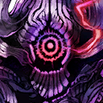

|
 |
ウガチ |
う…ぐ… |
| タノスケ |
…こいつは…やばいかもなあ |

神鬼 |
どこまでもつのか、見ものだネ |
ウガチ |
タノスケ!! |
| タノスケ |
…わかってますよ…っと！ |
神鬼 |
させないヨ
儂を倒せるとは思えんが、
拘束されるのも億劫でネ |
セリス |
………!! |

アマネ |
…タノスケ隊長!!
拙者も!! |
| タノスケ |
ダメだ |
アマネ |
…しかし!! |
| タノスケ |
まだ死にたくはないでしょ？ |
アマネ |
………… |
神鬼 |
おや、仲間割れかナ？
まだ余裕があるじゃないカ |
| タノスケ |
…君の力が必要になる瞬間が来る
その時に…あの術をぶっ放せ |
アマネ |
……!! |
神鬼 |
おや、そんな新人に期待をかけているのカ？
もう打つ手がないのカ… |
神鬼 |
哀れだネ |
アマネ |
…タノスケ隊長!! |
| タノスケ |
このくらい、平気さ
ウガチ隊長の策に、今は乗る時だ |
ウガチ |
…気づいていたのか |
| タノスケ |
殺す気でかかっていたら、神鬼の相手くらい
ウガチ隊長ひとりで十分でしょうに
黒斗の奥義だってあるんでしょ？ |
| タノスケ |
なのに、それをしない理由は明白だ |
ウガチ |
…お前のことは、やはり嫌いだ |
| タノスケ |
俺は、ウガチ隊長のこと好きですよ
部下思いなんだから、もう |
アマネ |
…え…？ |
神鬼 |
何をブツブツ言っているのかネ
細かな策など無駄だと… |
ウガチ |
…ハアアアアアアッ!!!! |
神鬼 |
笑止 |
ウガチ |
合わせろ!!! |
神鬼 |
!? |
ウガチ |
まったく…頭は冷えたか？ |
アザミ |
はい…おかげさまで |
神鬼 |
貴様…“籠紫”の…!! |
| タノスケ |
今だ、アマネ!! |
アマネ |
…!!
“鳥獣擬画”“甲ノ巻『大蛇』”!!!!! |
神鬼 |
グ…ッ!!!
これハ…!? |
アマネ |
やった…!! |
ウガチ |
とっととお前の“仇”を討っちまえ
…これは、貸しだぞ |
アザミ |
ハアアアアアアッ!!!!! |
神鬼 |
!!!!! |
アザミ |
我が一族の恨み…その身に刻め |
ウガチ |
…気は済んだか？ |
アザミ |
少々 |
ウガチ |
一泡吹かせたんだ
上々だろう |
アザミ |
逆の立場だったら、どうです？ |
ウガチ |
…生意気な奴め |
アマネ |
…まだ終わってない!! |
アザミ |
…わかってるわよ
今のワタシじゃ、届かなかった |
神鬼 |
…小癪な真似をしてくれるネ
それに… |
神鬼 |
貴様だったのカ |
アマネ |
……!? |
アザミ |
…役目は果たしたわ
あなたに勝ち目はもうないわよ |
アマネ |
…え？ |
| ？？？ |
四神の門の閂（かんぬき）を今一度ここに
その締結、開かずの門
姿を隠せ―― |
| ？？？ |
――すべては、収束せり |
神鬼 |
グ…オオオオオッ…!?
これは…身体が…思うように動かヌ…!? |
| ？？？ |
よくやってくれたわね、アザミ |
セリス |
おかげで、結界を張る時間ができたわ |
アマネ |
セリス…!! |
セリス |
奥の手は、隠しておくものよ |
神鬼 |
グ…小癪ナ…!! |
セリス |
あなたの逃げ場はもうないわ
…形勢逆転よ
ここからは… |
セリス |
“鬼退治”と洒落込みましょうか |